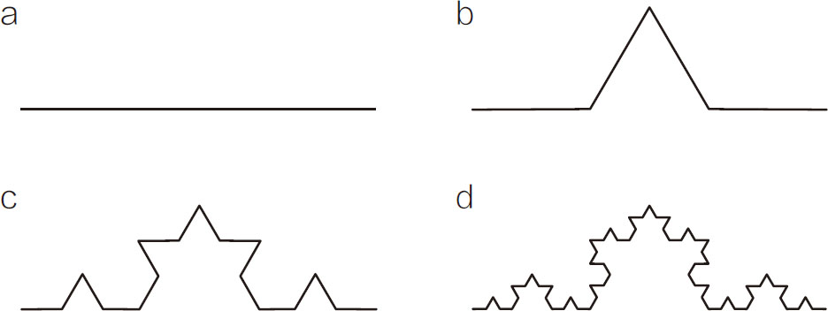
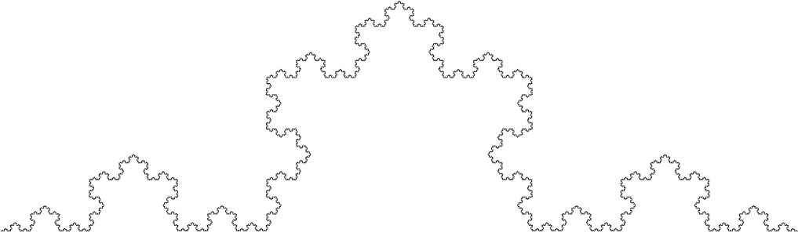
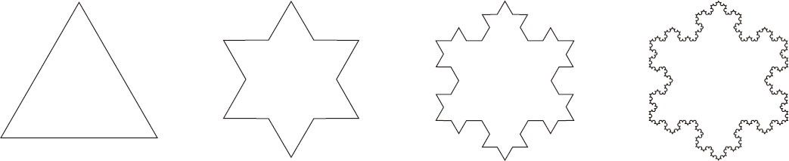
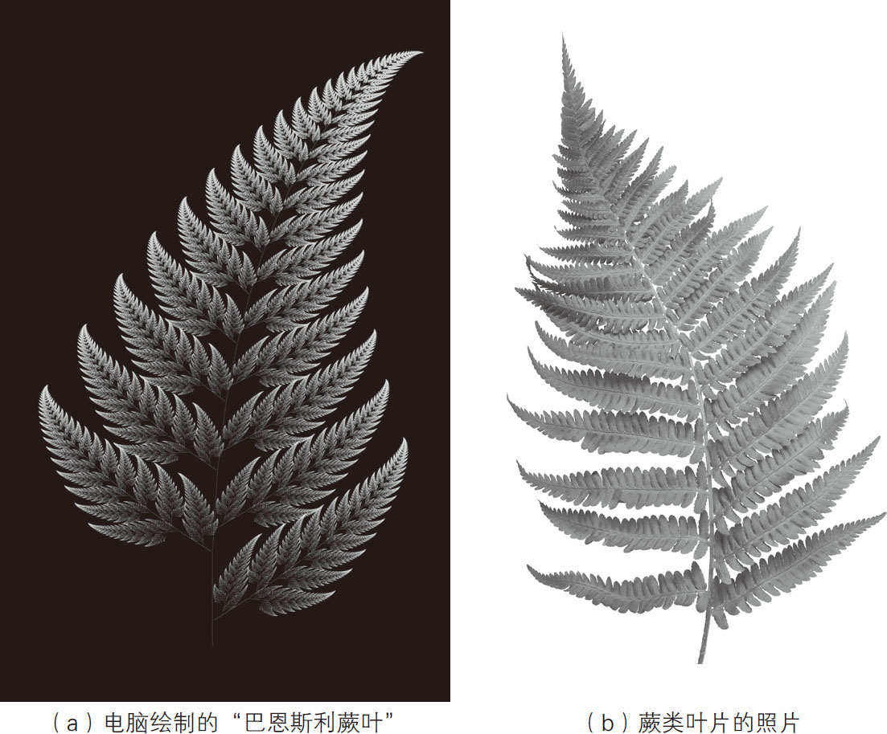
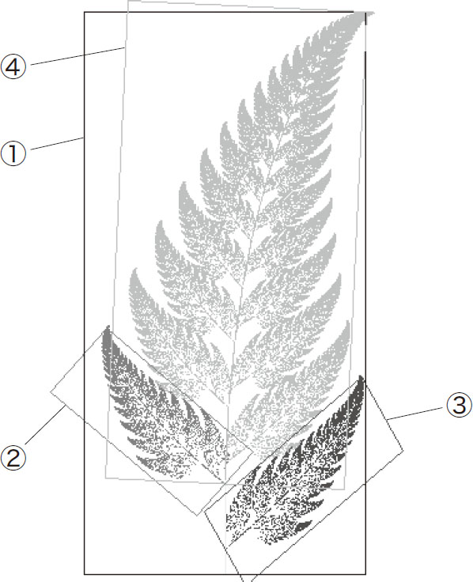
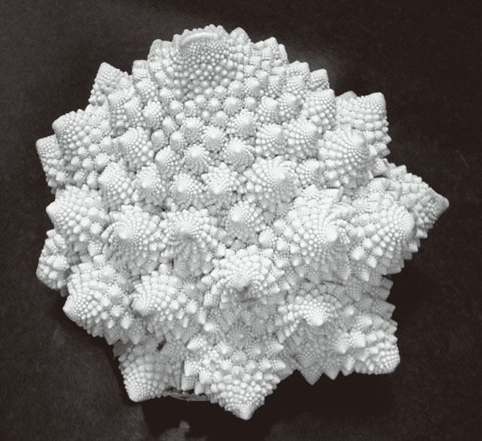
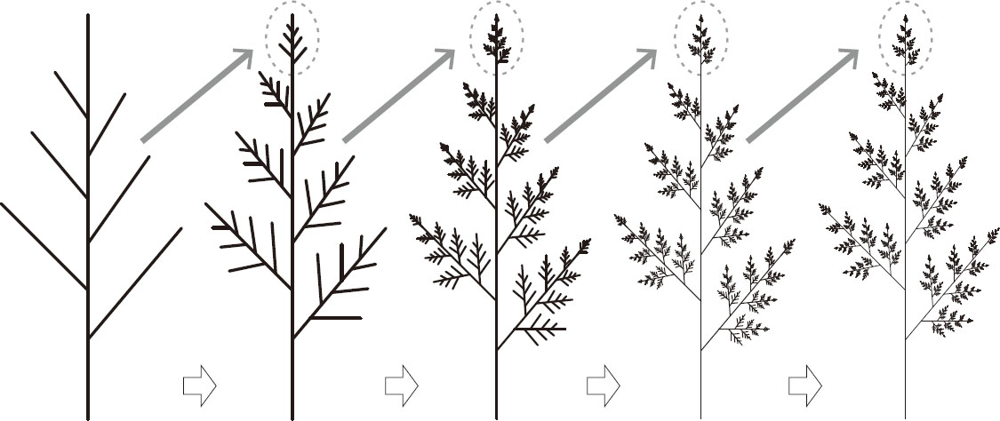
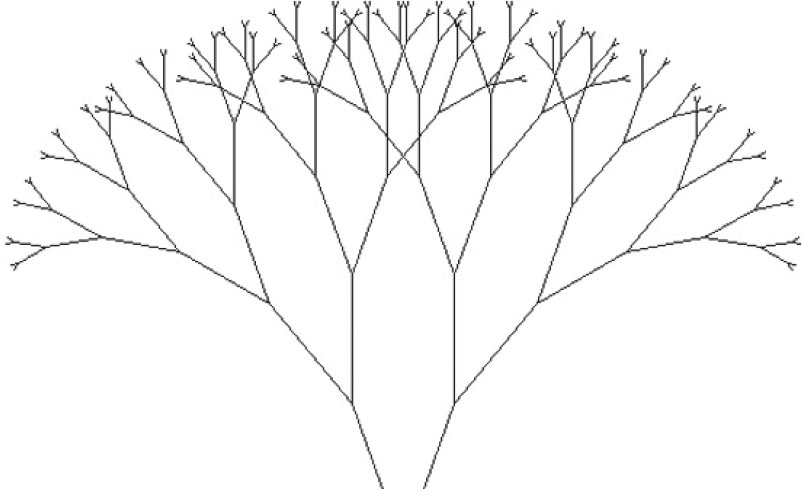

自然界中有着太多奇特的形状，比如树枝、雪花、地图上看到的海岸线等。如果我们对照着世界地图用纸和笔认真地画海岸线，就会发现看得越仔细，越觉得复杂，无法完全准确地画出来。相反，大楼、道路这些人工建造物的形状就可以很轻松地被画出来，而且只会用到直线或弧线这种简单的线条。尤其是大楼，大多数只用直线就能被画出来。不难发现，在我们的生活中，自然物体的形状十分复杂，而人造物体的形状则简单得多 ，为什么会出现这样的现象呢？
有人认为，这是由于人类具有认知能力，更喜欢有规则的形状，而自然界没有认知能力，所以会产生大量复杂、无规则的形状。这一观点曾经得到过很多人的支持，然而事实真是如此吗？答案是否定的。法国数学家伯努瓦·曼德尔布罗 发现，自然界中看似复杂、无规则的形状中隐藏着大量数学规律 。
下面给大家介绍一种名为“科赫曲线 ”的图形。首先请大家在白纸上画一条线段，并将这条线段三等分，如图1-12（a）所示；然后将位于中间的线段作为等边三角形的一条边，画出另两条边，并擦掉这条边，如图1-12（b）所示；接着将这个图形中的每条边都进行三等分，重复上述操作，得到图1-12（c）所示的图形；再次重复上述三步操作，即可得到如图1-12（d）所示的科赫曲线。

图1-12 科赫曲线的绘制过程
大家继续重复以上操作，会得到较复杂的科赫曲线，如图1-13所示。

图1-13 较复杂的科赫曲线
我们如果将一个等边三角形作为起点，用绘制科赫曲线的方法不停地画下去，就会得到形如雪花的图形。这个图形被称为“科赫雪花 ”，如图1-14所示。

图1-14 科赫雪花绘制过程
从科赫雪花的绘制过程可以看出，只需要经过简单、重复的操作，就能画出自然界中看似复杂的形状。或许自然界中复杂的形状都蕴含着某种重复的规律。
接下来介绍一个稍难的例子。图1-15（b）是一种蕨类植物的叶片照片，图1-15（a）是遵循某种简单规则，用电脑绘制的叶片。它们是不是很像？

图1-15 电脑绘制的叶片及蕨类叶片的照片
（图片来源：123RF网站）
事实上，左侧的图形是将某个简单图形不停地缩小、复制后组合而成的，如图1-16所示。

图1-16 “巴恩斯利蕨叶”的画法
（作者：António Miguel de Campos；来源：Wikimedia Commons）
具体过程如下：
1．画出第一片基础叶。
2．将四边形①内的叶缩小后复制粘贴到四边形②内。
3．将四边形①内的叶缩小后复制粘贴到四边形③内。
4．将四边形①内的叶缩小后复制粘贴到四边形④内。
人们仅通过简单重复的操作，就可以绘出以假乱真的复杂蕨类叶片。令人称奇的是，电脑中并没有安装绘制蕨类叶片的软件。上述用电脑绘制的蕨类叶片，就是有名的“巴恩斯利蕨叶 ”，因被收录于英国著名数学家迈克尔·巴恩斯利的《无处不在的分形》一书而广为人知。
科赫曲线与巴恩斯利蕨叶的相同之处在于，图形中的一个部分与整体完全一样 。例如，将科赫曲线中的一个部分放大之后与整体进行比较，完全看不出有差别。类似这种在一个图形中，部分与整体相似的现象被称为“自相似 ”，具有“自相似”特征的图形被称为“分形 ”。自然界中具有分形结构的事物有很多。其中最有名的就是宝塔花菜（花菜的一种），如图1-17所示。宝塔花菜有着非常美丽的外形，堪称一件艺术品，然而它只是一种蔬菜。宝塔花菜的外观具有典型的自相似图形的分形特征。

图1-17 宝塔花菜照片
提起自然界中自相似的图形，就不得不说树枝。我们如果将树枝放在白纸上并拍摄一张照片（放在白纸上拍照是为了使背景简单，利于观察），再将照片中的某部分枝丫放大，然后与整个树枝进行对比就会发现，很难区分出哪张是枝丫的照片，哪张是整个树枝的照片。事实上，树枝具有分形结构的特点。
我们可以用图1-18所示的方式，经过多次复制、粘贴，一步步画出来树枝。首先，我们画一个最简单的起始枝丫（图左一），然后将这一枝丫缩小，复制、粘贴到起始枝丫的每一个分支上。不断重复以上操作，就能画出看似长着树叶的树枝图形。

图1-18 树枝的绘制过程
我们如果把起始图形换成“Y”型的，就可以得到如图1-19所示的图形，看起来很像一棵冬日叶子落尽后的枯树。

图1-19 分形树
除了上面提到的例子外，自然界中还有许多具有分形结构的图形。可见大自然中那些看似不规则的图形里，其实隐藏着数学规律。
分形结构一度在计算机领域备受瞩目。大型游戏中的山峦、峡谷等景观都是通过绘图的方式呈现的，玩家可在其中游历或战斗。为了使画面更加逼真，景观当中起伏的地形与地面上的植物也需要被画出来。要让计算机画出各种不规则的图形，再现各种自然景观无疑是一个难题。但是如果考虑使用分形构建的方式，人们就能通过简单的复制、粘贴来完成这一工作，画出与自然界中的地形和植物高度相似的图形，这大大减少了计算机绘图的成本。
然而，随着计算机性能的飞速提升，目前分形结构的利用率已经不是很高了。但是，自然形态的分形结构在艺术等领域中，仍然吸引着很多人用数学思维进行艺术创作。